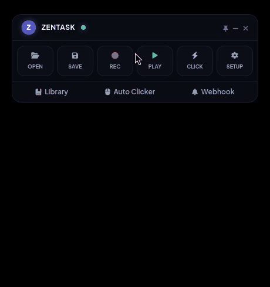
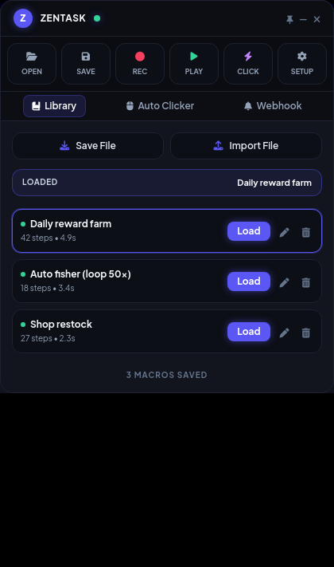
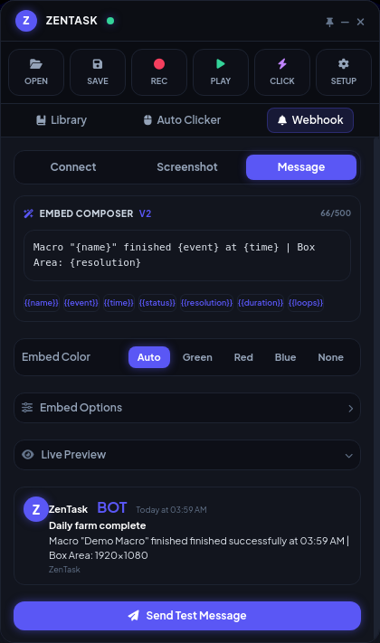
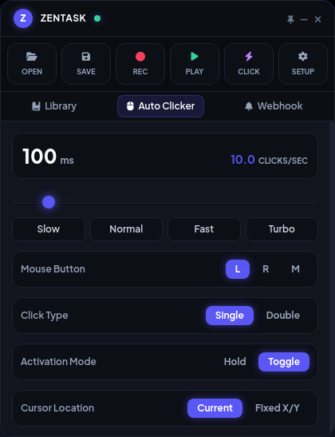

ZenTask
A tiny, always-on-top macro recorder & auto clicker for Windows. Record your mouse and keyboard, loop it, hotkey it, save it. No account, no telemetry — just press record.

Captures mouse moves, clicks and keystrokes. Loop a set number of times or forever, with fine-tuned speed control.
Adjustable clicks-per-second, any button, single or double. Follow your cursor dynamically or click a fixed coordinate.
Save macros with the native Windows save-as dialog, rename them instantly, and load them instantly anytime.
Record, play, pause and trigger clicker hotkeys that execute globally in any app — you never have to touch the widget.
Compact, draggable widget that stays out of your way. Ships with custom themes, light mode, and system tray support.
Hardware-level scaling ensures your recordings stay perfectly accurate at 125%, 150%, and beyond display scaling.
See it in action


